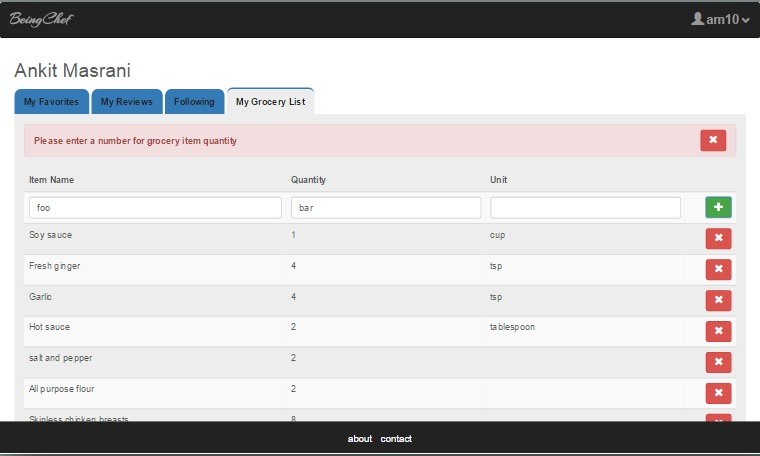

BeingChef User Dashboard-Grocery List
The user dashboard page consists of the name of the user in the heading and a tab structure to
allow the user to navigate to various sections of his profile.
- Shown below is the grocery list tab of the user.
- On this tab the user can view it's grocery list. This list is populated either
by clicking "Add to Grocery List" button on the recipe details page which will add the
recipe ingredients to this list or by manually inputing grocery items here on the dashboard.
-
The items are smartly added to the list. Trying to addan item that is already in the list
will simply update the quantity of item in the list, instead of adding duplicate
entries. However, this will only work if the units of the two items are the same.
-
On this tab, the users can also delete items from the lists by clicking the remove icon
on the right of the item.
-
The name and quantity of the item are mandatory and the quantity must be a number.
-
Grocery List Dashboard:
-
Grocery List Dashboard null check validation:
-
Grocery List Dashboard quantity number check validation::
